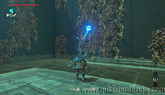

Puedes completar este santuario desde que llegas a la región de la torre de Eldin. Además, tendrás que completar una Prueba heroica (El misterio del cuadro), para activarla debes ir a la Posta de la montaña y hablar con un personaje que hay dentro mirando un cuadro. Así se activará la prueba y si vuelves a hablar con él después de haber encontrado el santuario se completará.
El santuario está localizado al sur de la torre de Eldin, escondido entre las montañas. Una vez que lo encuentres podrás entrar en él sin obstáculos.
Dentro, verás varias enredaderas en las paredes del santuario . Puedes quitarlas si las quemas (tienes una antorcha al final del pasillo por si quieres usarla o con flechas de fuego). También puedes usar las bombas y así no malgastar recursos. Detrás de la enredadera más grande descubrirás unos bloques de madera que también puedes romper o quemar.

Pasa por ese agujero que has abierto y verás una puerta cerrada con llave y al otro extremo el altar. Primero quema la enredadera que está a la izquierda de la puerta cerrada. Puedes usar una flecha a través del fuego, una flecha de fuego o incluso una flecha bomba.
Si quitas la enredadera un cofre caerá y dejará caer una llave de su interior. Usa el imán para cogerla y acercarla por encima de la puerta. Con ella podrás abrir la puerta y acceder a otro cofre, en esta ocasión contiene un Rubí.
Ahora solo te queda quemar las cajas (o lanzarles una bomba) para formar una rampa que te permita llegar al altar y conseguir el símbolo de valía. Aunque primero puedes abrir un segundo cofre.
A la derecha del altar, antes de subir hasta él, hay otra enredadera. Quémala por cualquier medio o lanza una bomba y descubrirás otro cofre oculto. En esta ocasión contiene un Aplastarrocas.